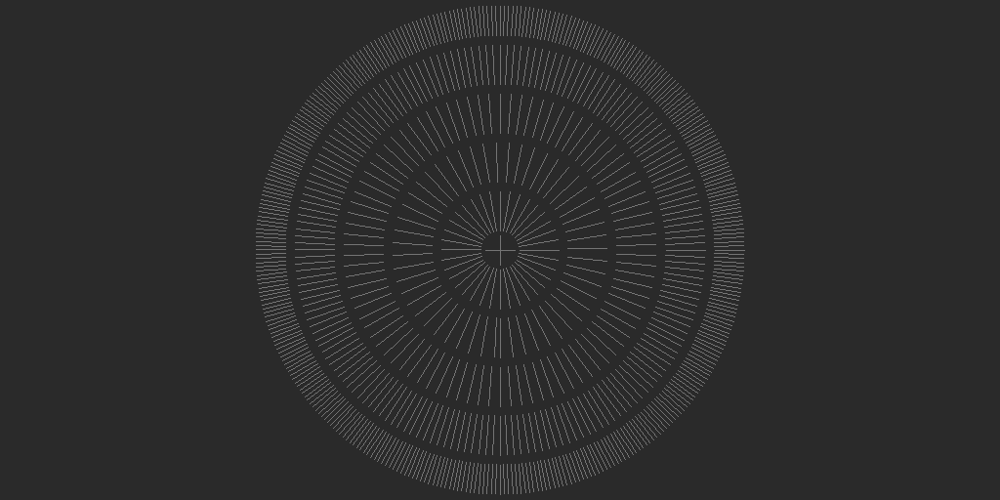
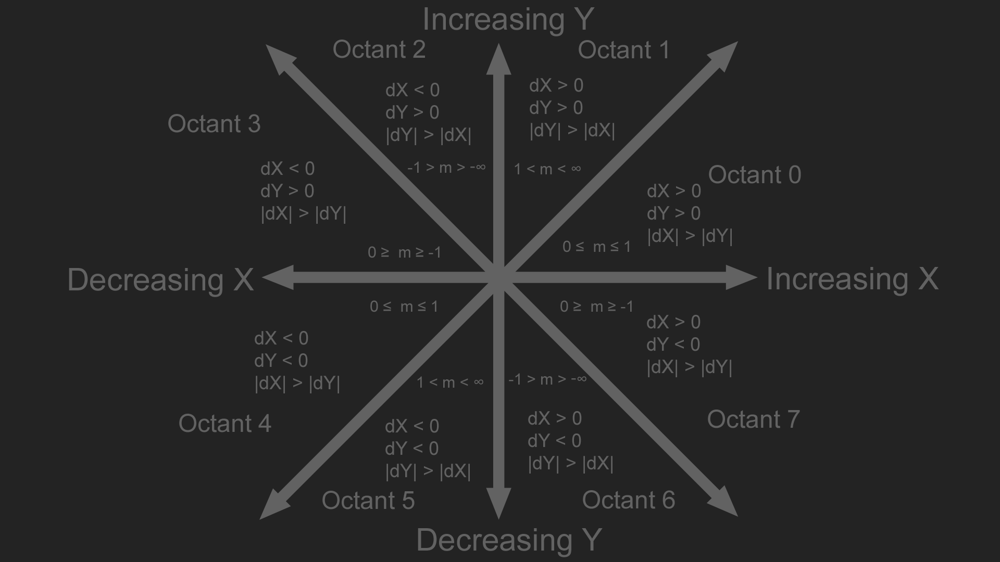

Drawing Lines
This blog will cover common methods to drawing lines.To follow along, you should be familiar with Linear Equations, Slope intercept form, and Vectors. The code samples for this blog post are available here. These are my suggested additional resources on line drawing.
- Computer Graphics for Java Programmers, Third Edition
- Computer Graphics Principles and Practice, Second Edition
- Computer Graphics C Version, Second Edition
- Michael Abrash's Graphics Programming Black Book, Online
- Hugo Elias's site on Archive.org
Troughout this blog we will implement three algorithms for line drawing. We will implement a floating point version of each, and an integer only version where appropriate. This is the test code that is run to make sure lines are being drawn properly:
double TestLine(fnDrawLine DrawLine, const char* output) {
Image image(512, 512); // Makes new image, 512 x 512 in size
for (int x = 0; x < image.width; ++x) {
for (int y = 0; y < image.height; ++y) {
PutPixel(image, x, y, Color(42, 42, 42));
}
}
Color val(116, 116, 116);
LARGE_INTEGER timerFrequency;
QueryPerformanceFrequency(&timerFrequency);
LARGE_INTEGER timerStart = { 0 };
LARGE_INTEGER timerStop = { 0 };
QueryPerformanceCounter(&timerStart);
for (int angle = 0; angle < 360; angle += 1) {
float radians = float(angle) * 0.01745329;
float s = sinf(radians);
float c = cosf(radians);
if (angle % 10 == 0) {
DrawLine(image, (int)(20.0f * s + 256.0f), (int)(20.0f * c + 256.0f), (int)(60.0f * s + 256.0f), (int)(60.0f * c + 256.0f), val);
}
if (angle % 7 == 0) {
DrawLine(image, (int)(70.0f * s + 256.0f), (int)(70.0f * c + 256.0f), (int)(110.0f * s + 256.0f), (int)(110.0f * c + 256.0f), val);
}
if (angle % 4 == 0) {
DrawLine(image, (int)(120.0f * s + 256.0f), (int)(120.0f * c + 256.0f), (int)(160.0f * s + 256.0f), (int)(160.0f * c + 256.0f), val);
}
if (angle % 2 == 0) {
DrawLine(image, (int)(170.0f * s + 256.0f), (int)(170.0f * c + 256.0f), (int)(210.0f * s + 256.0f), (int)(210.0f * c + 256.0f), val);
}
DrawLine(image, (int)(220.0f * s + 256.0f), (int)(220.0f * c + 256.0f), (int)(250.0f * s + 256.0f), (int)(250.0f * c + 256.0f), val);
}
DrawLine(image, 256 - 15, 256, 256 + 15, 256, val);
DrawLine(image, 256, 256 - 15, 256, 256 + 15, val);
QueryPerformanceCounter(&timerStop);
LONGLONG timerDiff = timerStop.QuadPart - timerStart.QuadPart;
double ms = (double)timerDiff * 1000.0 / (double)timerFrequency.QuadPart;
stbi_write_png(output, image.width, image.height, 1, image.data, 0);
return ms;
}
It produces consecutive rings of lines, like shown below:
A line can be categorized into one of the following eight octants based on its start and end points. The y axis in the image below increases going up, for most graphics API's y increases going down.
Algorithms to draw lines are often presented only for one of the eight octants. With minimal code modification, the line can be mirrored into the other octants. This blog will also present some algorithms in a few octants at first, but will also present the code to handle all octants.